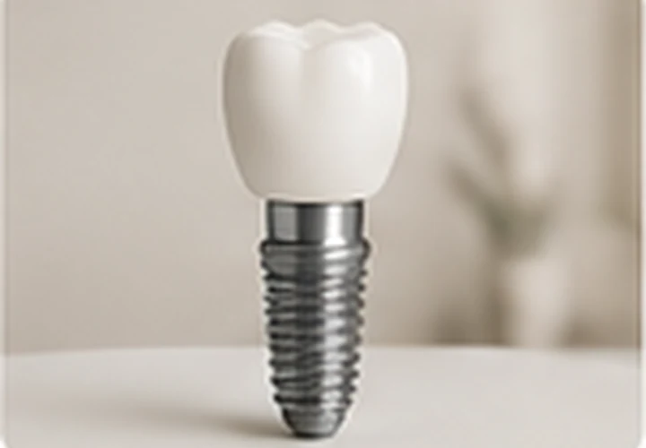
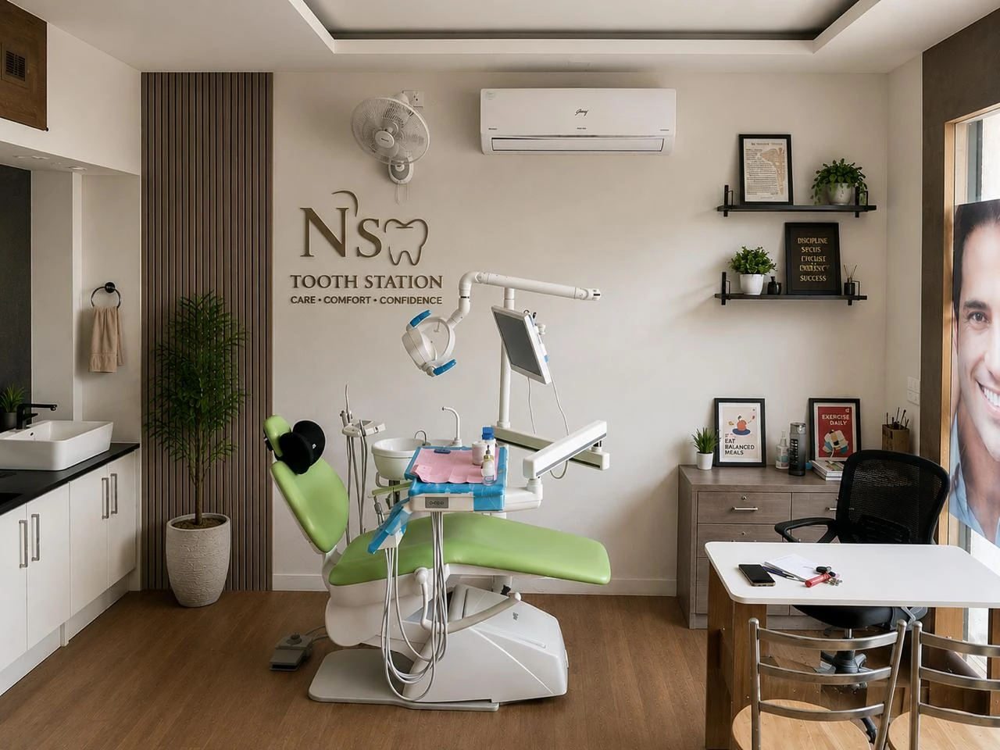
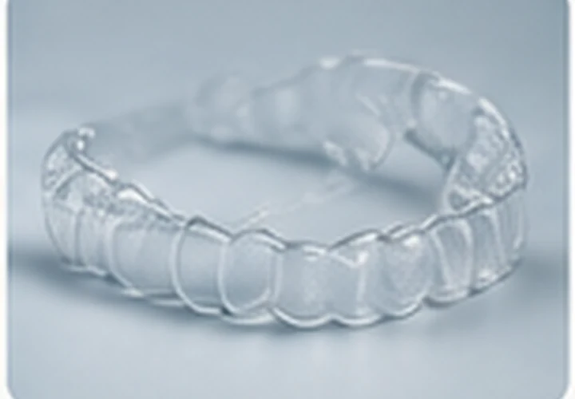
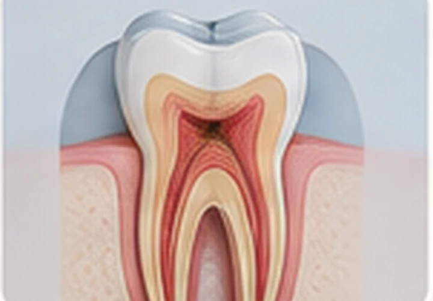
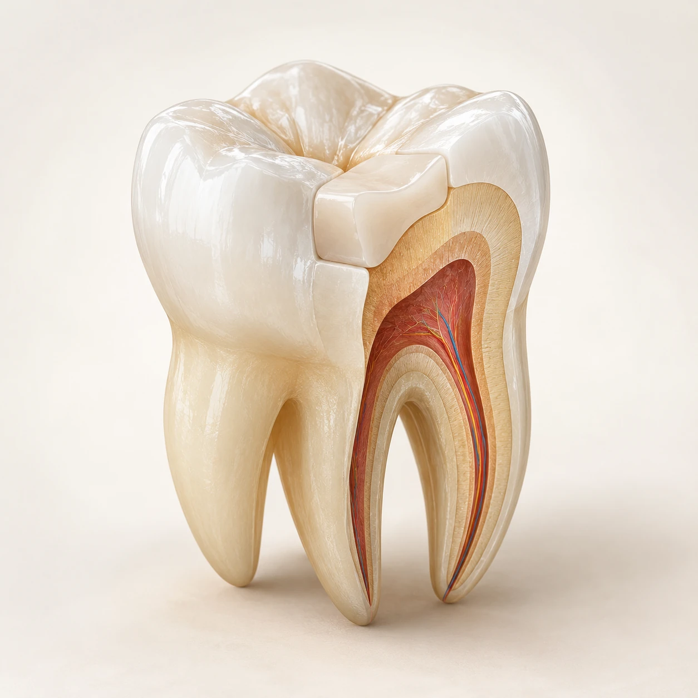
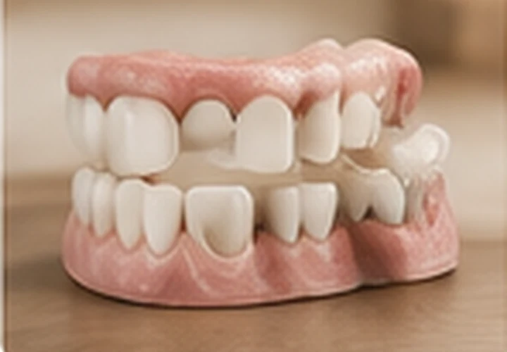
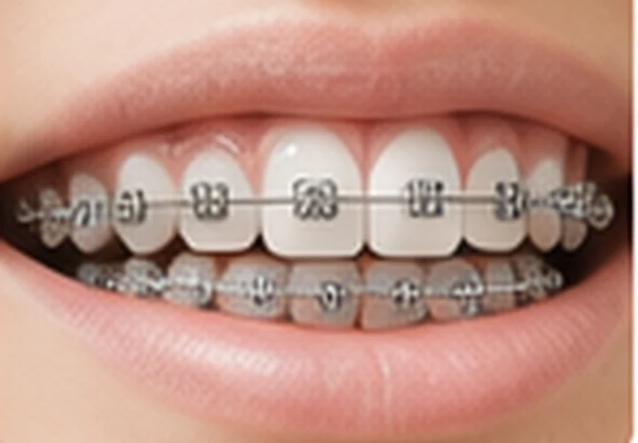
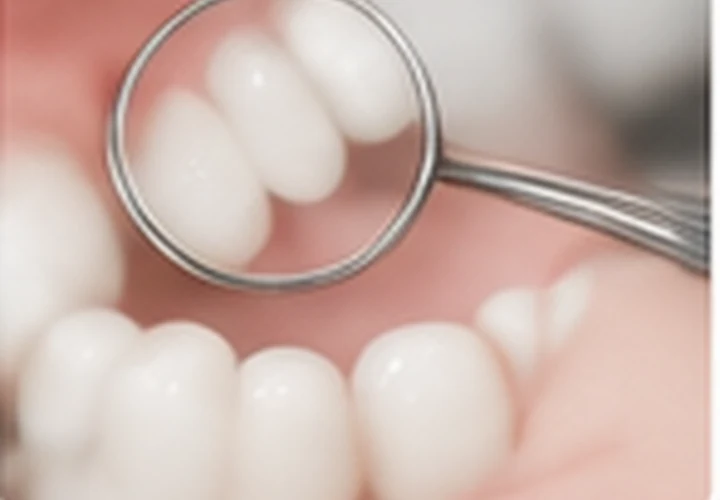
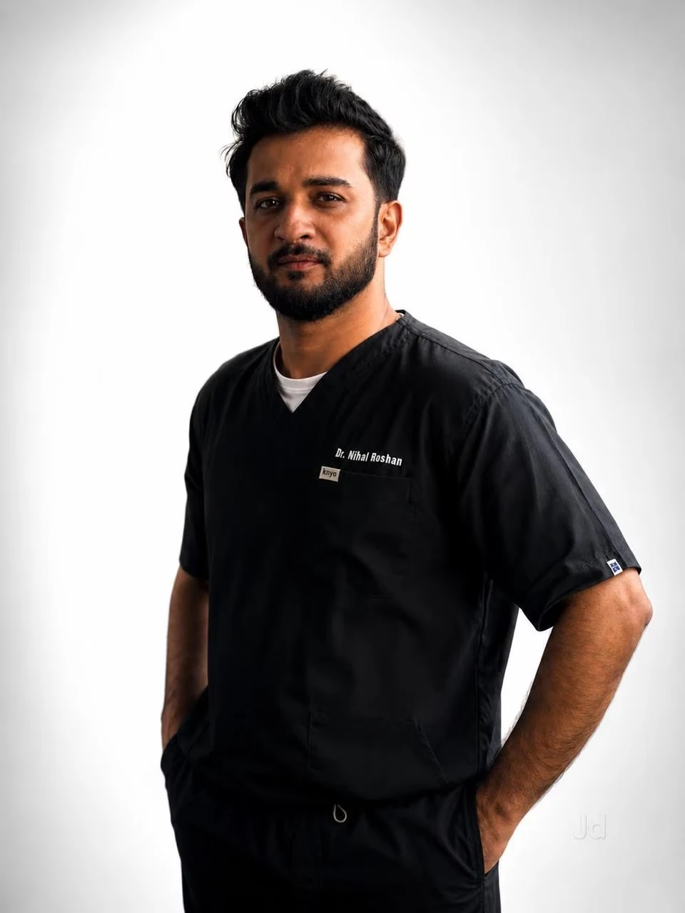

Dental Implants
Advanced tooth replacement solutions.
Illustrative visual · not a clinical photograph
Established in 2020, N.S. Tooth Station provides dental care focused on patient comfort, oral health and clear communication about treatment options.

Actual clinic photograph · supplied by clinicEach treatment requires an individual assessment. The dentist can explain clinical findings, available options, risks, expected stages and fees.

Advanced tooth replacement solutions.

Clear aligner options including Invisalign, Illusion and DentCare. Suitability depends on an individual dental assessment.

Care to preserve natural teeth.

A tooth-restoration approach that aims to preserve and replicate natural tooth structure, strength and function. It may be used in restorative procedures such as fillings, depending on the condition of the tooth.

Restorative solutions for your smile.

Treatment options for teeth alignment.

Check-ups, cleaning, gum care, extractions and children's dentistry.
Illustrative visuals are not photographs of procedures, equipment or treatment outcomes. Invisalign® is a registered trademark of Align Technology, Inc.
Care · Comfort · Clear communication
At N.S. Tooth Station Multi-speciality Clinic, the stated aim is to provide personalised dental care with attention to patient comfort, oral health and clear communication.
From routine check-ups to the treatments listed by the practice, the dentist can explain clinical findings and discuss suitable options following an examination.

Graduated from Rajiv Gandhi University of Health Sciences, Karnataka. Registered with the Karnataka State Dental Council. Dr. Roshan's approach focuses on personalised dental care, patient comfort, clear communication and long-term oral health.
Karnataka State Dental Council
Reg. No. 49081-A
Registration current
Call or message on WhatsApp to book. Open Monday to Saturday, 9:30 am to 9 pm.